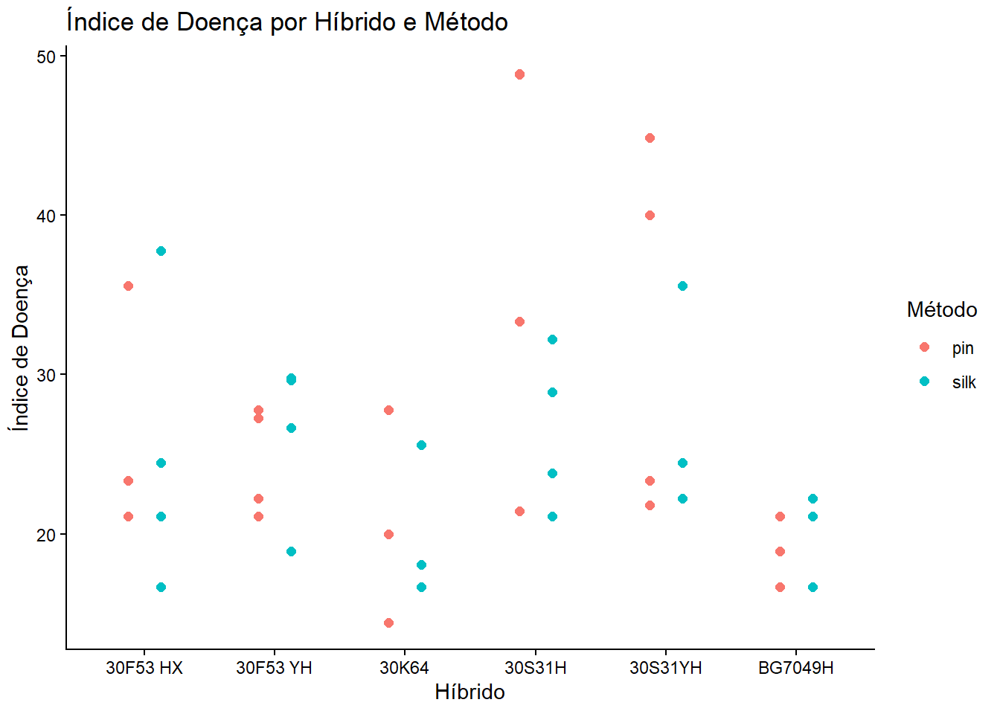
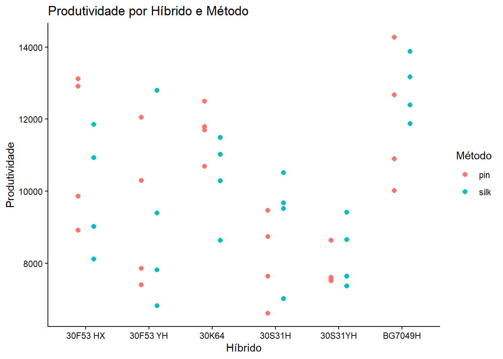
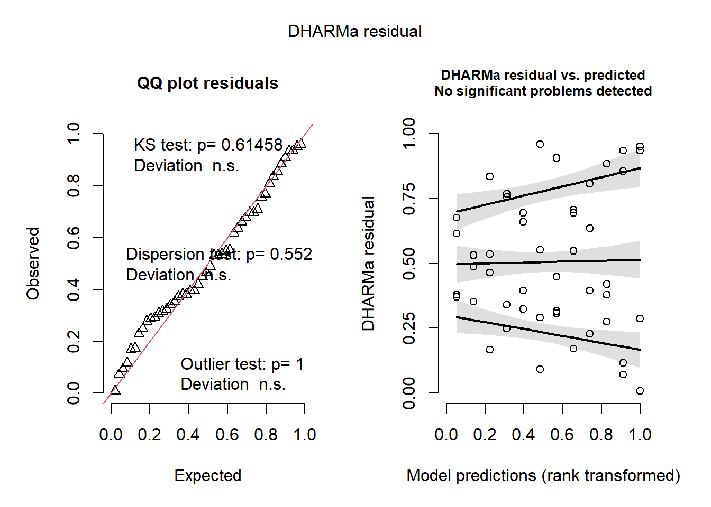

Aula 7 - Delineamento em Parcelas Subdivididas (Split-Plot) e Modelos Mistos
Introdução
Nesta aula, abordaremos a análise de um experimento em Parcelas Subdivididas (Split-Plot). Esse delineamento é frequentemente utilizado quando um dos fatores exige parcelas maiores (ou é mais difícil de aleatorizar) e o outro fator pode ser aplicado em sub-parcelas menores dentro da parcela principal.
Neste exemplo (milho), temos: - Parcela Principal: Híbrido de milho (hybrid). - Sub-parcela: Método de inoculação/avaliação (method). - Bloco: Controle de variação local (block).
Vamos analisar o índice de doença (index) e a produtividade (yield).
1. Carregamento e Exploração Visual dos Dados
1.1 Carregar o conjunto de dados
library(readxl)library(tidyverse)# Carrega os dados da aba "milho"milho <-read_excel("dados_diversos.xlsx", "milho")# Visualização rápida da estrutura dos dadoshead(milho)
A visualização ajuda a identificar tendências prévias de interação entre Híbrido e Método. Usamos position_dodge para que os pontos não fiquem sobrepostos.
# Gráfico para o Índice de Doença (index)milho |>ggplot(aes(x = hybrid, y = index, color = method)) +geom_point(position =position_dodge(width =0.5), size =2) +theme_classic() +labs(title ="Índice de Doença por Híbrido e Método",x ="Híbrido", y ="Índice de Doença", color ="Método")

# Gráfico para Produtividade (yield)milho |>ggplot(aes(x = hybrid, y = yield, color = method)) +geom_point(position =position_dodge(width =0.5), size =2) +theme_classic() +labs(title ="Produtividade por Híbrido e Método",x ="Híbrido", y ="Produtividade", color ="Método")

2. Modelagem Clássica com ANOVA (aov)
A análise clássica de parcelas subdivididas envolve o desdobramento do erro. Temos dois erros: - Erro a (Parcela): Interação Bloco x Fator Principal (block:hybrid). Utilizado para testar o fator principal. - Erro b (Sub-parcela): Erro residual do modelo. Utilizado para testar o subfator e a interação.
No R, isso é especificado através do termo Error(block/hybrid) na função aov.
# Modelo ANOVA para a variável 'yield' (Produtividade)modelo_yield <-aov(yield ~ hybrid * method +Error(block/hybrid), data = milho)summary(modelo_yield)
Error: block
Df Sum Sq Mean Sq F value Pr(>F)
Residuals 1 5407719 5407719
Error: block:hybrid
Df Sum Sq Mean Sq
hybrid 5 97432621 19486524
Error: Within
Df Sum Sq Mean Sq F value Pr(>F)
hybrid 5 28564489 5712898 2.590 0.0462 *
method 1 42951 42951 0.019 0.8900
hybrid:method 5 10619453 2123891 0.963 0.4561
Residuals 30 66181211 2206040
---
Signif. codes: 0 '***' 0.001 '**' 0.01 '*' 0.05 '.' 0.1 ' ' 1
# Modelo ANOVA para a variável 'index' (Índice de Doença)modelo_index <-aov(index ~ hybrid * method +Error(block/hybrid), data = milho)summary(modelo_index)
Error: block
Df Sum Sq Mean Sq F value Pr(>F)
Residuals 1 545.4 545.4
Error: block:hybrid
Df Sum Sq Mean Sq
hybrid 5 1442 288.3
Error: Within
Df Sum Sq Mean Sq F value Pr(>F)
hybrid 5 165.7 33.14 1.534 0.2090
method 1 79.6 79.61 3.686 0.0644 .
hybrid:method 5 265.3 53.06 2.457 0.0558 .
Residuals 30 647.8 21.59
---
Signif. codes: 0 '***' 0.001 '**' 0.01 '*' 0.05 '.' 0.1 ' ' 1
2.1 Checagem de Premissas (Abordagem Clássica)
Extraímos os resíduos do nível da sub-parcela (Within) para checar a normalidade e homogeneidade de variâncias.
library(car)# Extrai resíduos do Erro (b)residuos <-residuals(modelo_index$Within)# Teste de Shapiro-Wilk para Normalidadeshapiro.test(residuos)
Shapiro-Wilk normality test
data: residuos
W = 0.97554, p-value = 0.5122
# Teste de Levene para Homogeneidade de VariânciasleveneTest(index ~ hybrid * method, data = milho)
Levene's Test for Homogeneity of Variance (center = median)
Df F value Pr(>F)
group 11 2.1493 0.04152 *
36
---
Signif. codes: 0 '***' 0.001 '**' 0.01 '*' 0.05 '.' 0.1 ' ' 1
Teoria Estatística: P-valores \(> 0.05\) nos testes de Shapiro-Wilk e Levene indicam que não rejeitamos a hipótese nula. Isso significa que os resíduos seguem distribuição normal e as variâncias são homogêneas, garantindo que as premissas da ANOVA clássica foram atendidas.
3. Modelagem Avançada: Modelos Mistos (lmer)
A abordagem moderna e mais recomendada para experimentos complexos (como Split-Plot) é a utilização de Modelos Lineares de Efeitos Mistos. - Efeitos Fixos: Aqueles sobre os quais queremos fazer inferência direta (hybrid, method e sua interação). - Efeitos Aleatórios: Aqueles que representam a estrutura de delineamento do experimento ou variabilidade de amostragem (block e block:hybrid).
O pacote lme4 realiza o ajuste do modelo, enquanto o lmerTest fornece os p-valores aproximados para a tabela da ANOVA.
library(lme4)library(lmerTest)# Ajuste do Modelo Misto para o Índice de Doença (index)# (1|block) = variação aleatória de blocos# (1|block:hybrid) = Representa o Erro 'a' da parcela principalmodelo_misto <-lmer(index ~ hybrid * method + (1|block) + (1|block:hybrid), data = milho)# Quadro da ANOVA do Modelo Mistoanova(modelo_misto)
Type III Analysis of Variance Table with Satterthwaite's method
Sum Sq Mean Sq NumDF DenDF F value Pr(>F)
hybrid 264.409 52.882 5 15 3.1397 0.03891 *
method 79.606 79.606 1 18 4.7263 0.04329 *
hybrid:method 265.281 53.056 5 18 3.1500 0.03240 *
---
Signif. codes: 0 '***' 0.001 '**' 0.01 '*' 0.05 '.' 0.1 ' ' 1
# Resumo dos componentes de variância (Variance Components)summary(modelo_misto)
O pacote DHARMa é excelente para simular resíduos em modelos mistos e realizar testes robustos contra desvios de normalidade, heterocedasticidade e valores atípicos.
library(DHARMa)# Simulação e gráfico de diagnóstico dos resíduosplot(simulateResiduals(modelo_misto))

4. Desdobramento da Interação e Teste de Médias
Havendo interação significativa (hybrid:method) na ANOVA, devemos realizar o desdobramento das médias, analisando um fator isolado dentro de níveis fixados do outro fator.
4.1 Extraindo as Médias e Calculando as Letras
Realizaremos duas comparações simultâneas: 1. Letras Minúsculas: Compara Híbridos dentro do mesmo Método (nas Colunas). 2. Letras Maiúsculas: Compara Métodos dentro do mesmo Híbrido (nas Linhas).
Unimos as duas comparações (letras minúsculas e maiúsculas) para criar uma tabela pronta para formatação de publicação científica.
Híbrido
Método Pin
Método Silk
BG7049H
19.4 a A
19.2 a A
30K64
20.6 a A
21.5 a A
30F53 YH
24.6 ab A
26.2 a A
30F53 HX
25.3 ab A
25 a A
30S31YH
32.5 ab A
26.7 a A
30S31H
38.1 b B
26.5 a A
Nota: Médias seguidas por letras iguais, minúsculas nas colunas (comparação de híbridos dentro de um mesmo método) e maiúsculas nas linhas (comparação de métodos dentro de um mesmo híbrido), não diferem entre si pelo teste de Tukey ao nível de 5% de significância.
4.3 Gráfico de Barras com as Letras de Significância
Apresentar os dados em formato de barras, com as barras de erro e as devidas letras, é a abordagem visual mais aceita e utilizada para resultados de interações complexas (fatoriais e parcelas subdivididas) na fitopatologia.
# Junta os dados completos para o gráfico (médias, Intervalos de Confiança e as duas letras)dados_grafico <- cld_colunas |>left_join(cld_linhas, by =c("hybrid", "method")) |>mutate(letras_finais =paste(letra_min, letra_mai))# Gráfico Padrão Publicaçãoggplot(dados_grafico, aes(x = hybrid, y = emmean, fill = method)) +# Barrasgeom_col(position =position_dodge(width =0.8), width =0.7, color ="black") +# Barras de Erro (Intervalo de Confiança 95%)geom_errorbar(aes(ymin = lower.CL, ymax = upper.CL), position =position_dodge(width =0.8), width =0.2, linewidth =0.7) +# Letras de significância (+ 2.5 na altura do eixo Y para não sobrepor a barra de erro)geom_text(aes(label = letras_finais, y = upper.CL +2.5), position =position_dodge(width =0.8), vjust =0, size =4) +# Cores e legendas personalizadasscale_fill_manual(values =c("pin"="#E69F00", "silk"="#56B4E9"),labels =c("Pin", "Silk")) +# Ajuste dos rótulos dos eixoslabs(x ="Híbridos de Milho",y ="Índice de Doença (Index)",fill ="Método de Inoculação:" ) +# Tema visual limpo (adequado para revistas científicas)theme_classic() +# Ajustes de alinhamento e tamanho das fontestheme(legend.position ="top",axis.text.x =element_text(angle =45, hjust =1, size =11),axis.text.y =element_text(size =11),axis.title =element_text(size =12, face ="bold") )